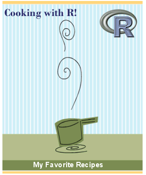
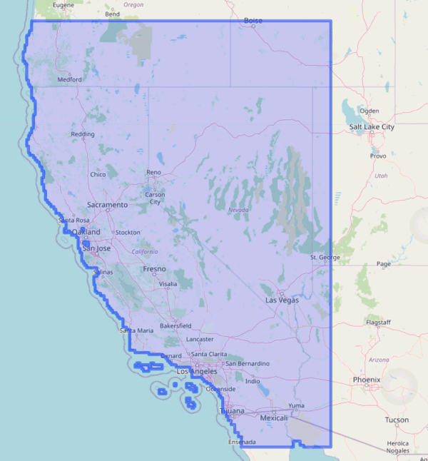
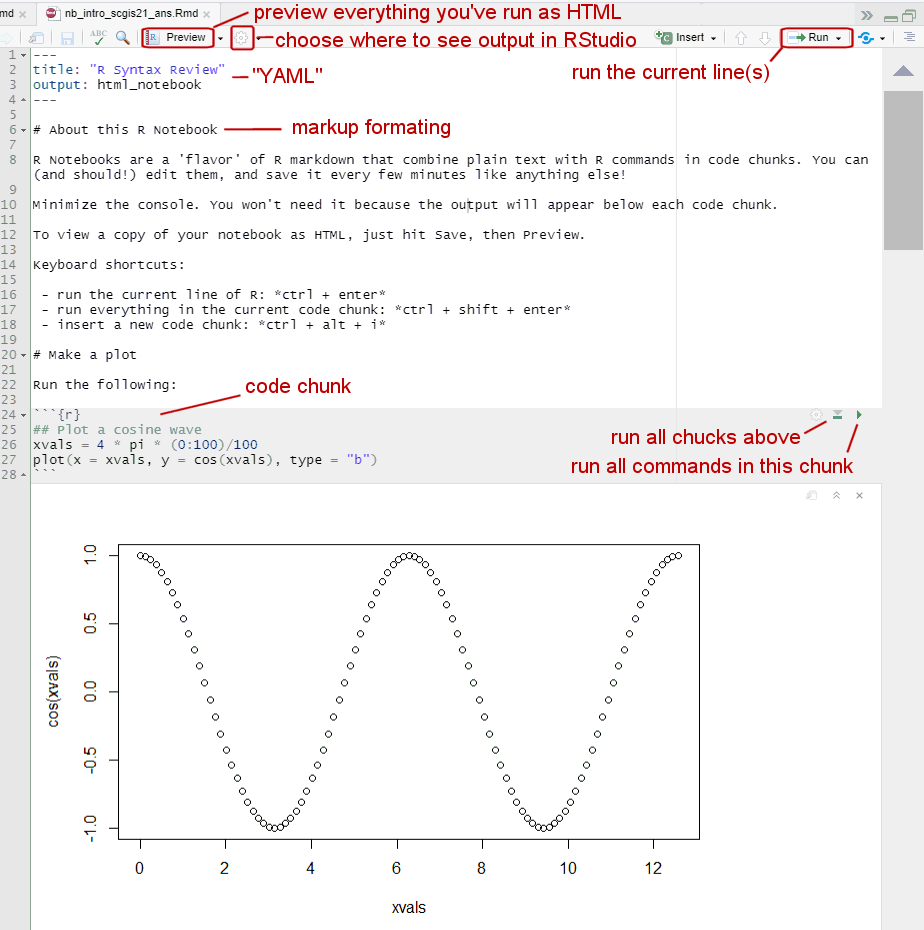

Working with Climate Data in R with caladaptR
October 1, 2021
Andy Lyons

Goals
1) Get familiar with caladaptR
2) Hands-on practice with:
- importing Cal-Adapt into R via the API
- data wrangling techniques to prep data for visualization or analysis
- techniques for dealing with large volumes of data
3) More caladaptR users!
- use-cases for analyses and visualization
- ideas for code recipes, features, and documentation
Learning Strategy

+ foundational concepts
+ code recipes
+ working examples
+ practice
Cal-Adapt
Cal-Adapt is California’s official portal for peer-reviewed climate data.
Datasets are selected with guidance and priorities from California State agencies.
Modeled Climate Data:
- temperature 6 km
- precipitation 6 km
- snow water equivalent 6 km
- relative humidity 6 km
- surface solar radiation 6 km
- wind speed
- wildfire risk
- drought scenarios
- streamflow
- sea level rise
- other derived variables
See also: What climate data does Cal-Adapt provide?.
Spatial extent of LOCA downscaled climate data layers:


Quick Example
- Load the package:
- Create an API request object:
cap1 <- ca_loc_pt(coords = c(-121.4687, 38.5938)) %>% ## specify a location
ca_cvar(c("tasmax", "tasmin")) %>% ## climate variables
ca_gcm(gcms[1:4]) %>% ## GCM(s)
ca_scenario(scenarios[1:2]) %>% ## emission scenarios(s)
ca_period("year") %>% ## temporal aggregation period
ca_years(start = 2040, end = 2060) ## start and end dates
- Check API request
## Cal-Adapt API Request
## Location(s):
## x: -121.469
## y: 38.594
## Variable(s): tasmax, tasmin
## Temporal aggregration period(s): year
## GCM(s): HadGEM2-ES, CNRM-CM5, CanESM2, MIROC5
## Scenario(s): rcp45, rcp85
## Dates: 2040-01-01 to 2060-12-31
##
## General issues
## - none found
## Issues for querying values
## - none found
## Issues for downloading rasters
## - none found
plot(cap1, locagrid = TRUE)
- Fetch data:
cap1_tbl <- ca_getvals_tbl(cap1, quiet = TRUE)
- View the results
R Notebooks
R Notebooks are written in “R Markdown”, which combines text and R code.

Remember:
When you’re in a R Notebook, the working directory is where the Rmd file resides.